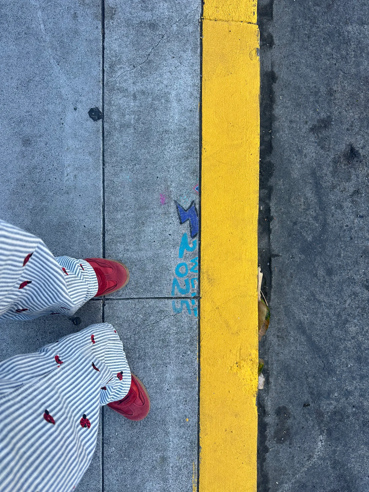
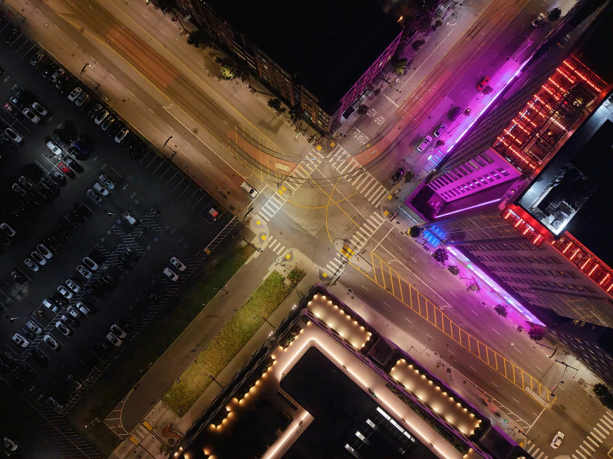
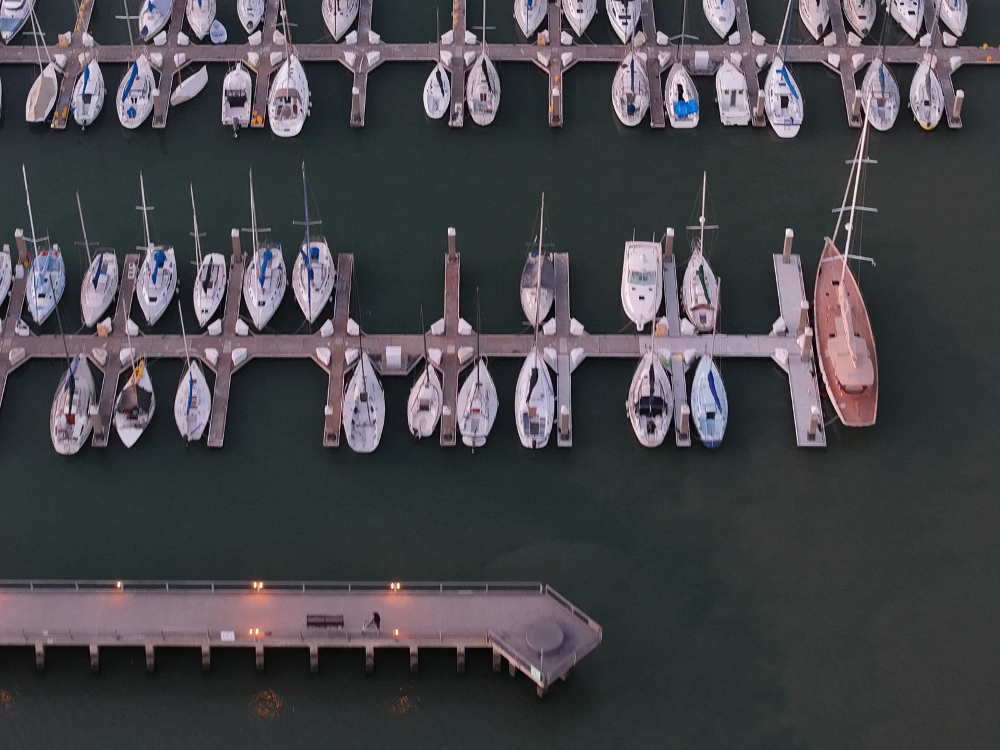
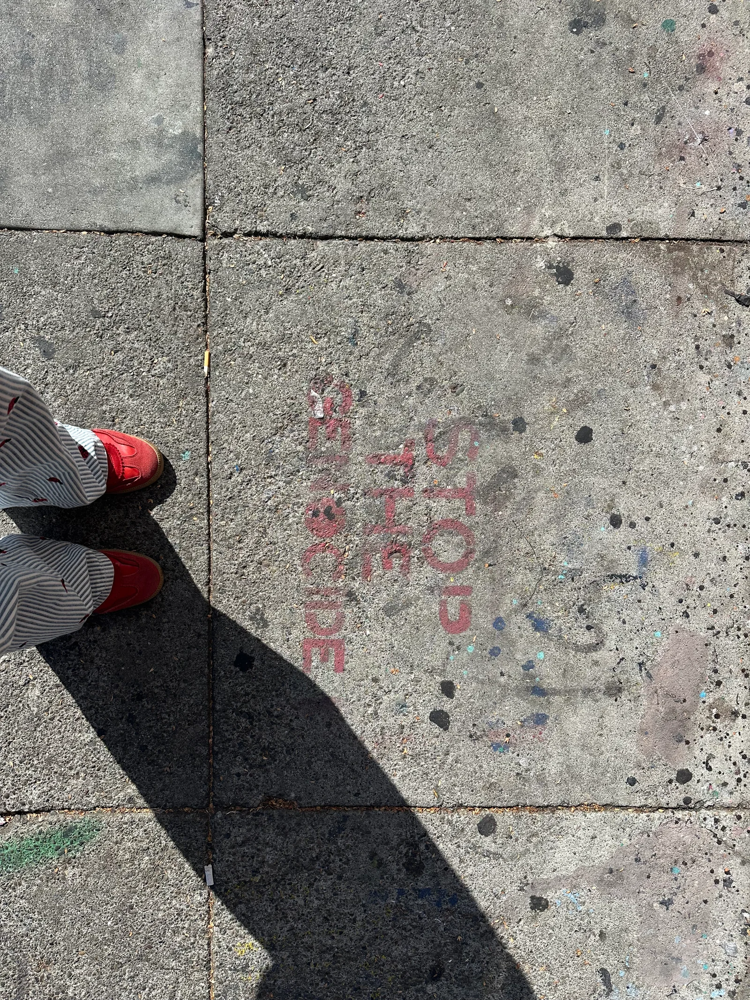
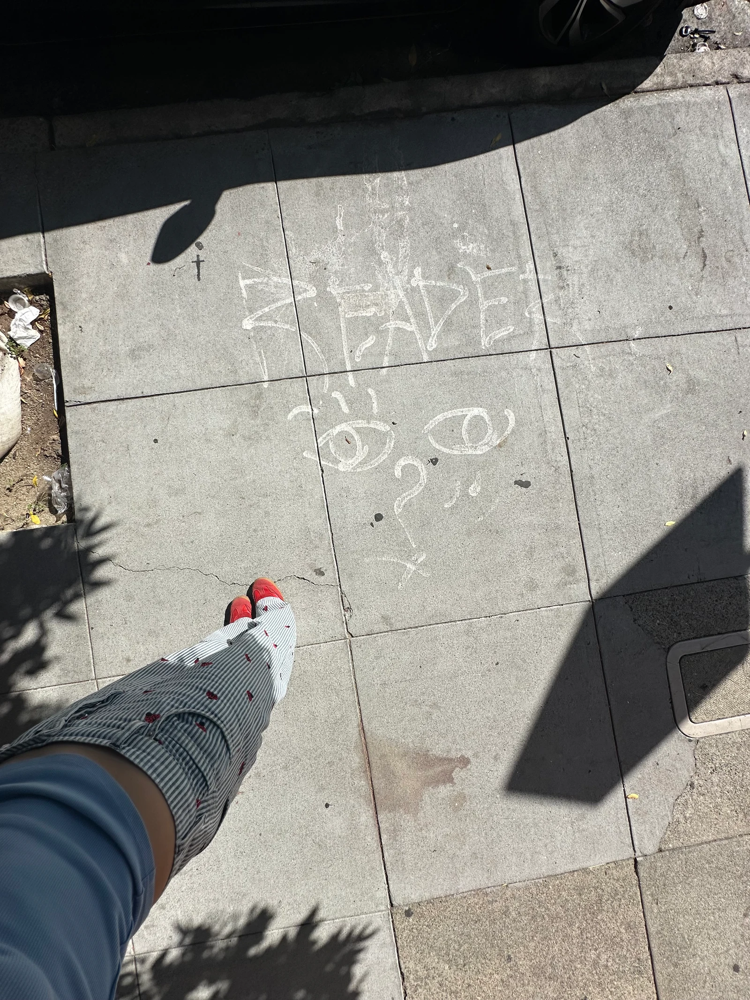
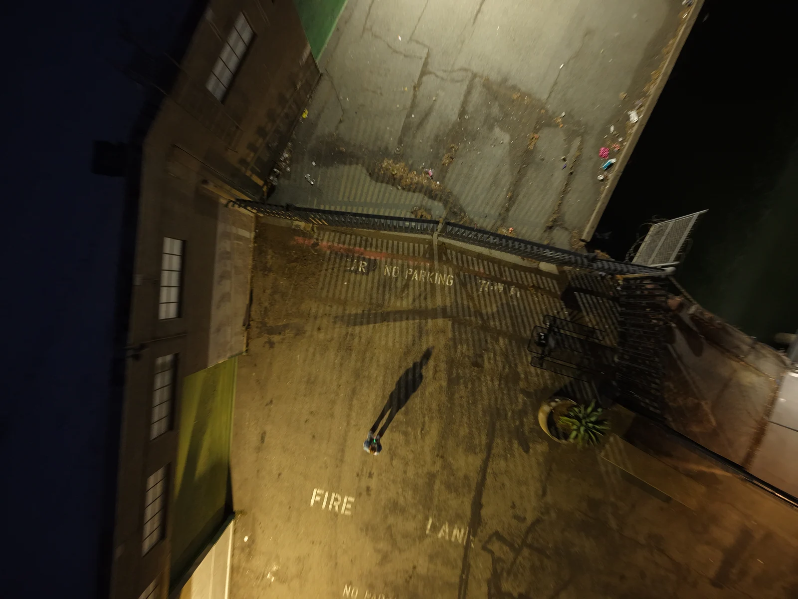

At two heights.
A city makes places for people.
Where does the person go
when the city becomes a picture?
{kind=link}

{kind=link}

I. The line
At the curb, yellow is almost a wall. It runs beside red shoes, wide enough to interrupt the whole photograph. Later, from above, yellow curls through an intersection. Crosswalks fan out. The streets meet in a bright, improbable piece of geometry.
The difference is not that the city has become orderly. The first picture already has its lines. What changes is their relation to a body: beside me becomes around there. A boundary becomes a composition without ceasing to be a boundary.
II. The vacancy
The empty place
already has
a shape.
The boats make a pattern. Their absences make one too. An empty slip keeps the same small architecture as the occupied slip beside it. Before a boat arrives, a place has been made for a boat.
Here, the pleasure of the aerial view becomes more particular. It lets us see an arrangement holding even where its subject is missing. The vacancy belongs to the pattern.
But at the bottom of the frame, small figures interrupt the rows and rectangles. The image offers a diagram, then leaves people in it.

III. The address
Then the ground
asks something of you.
{kind=link}

{kind=link}

“Stop the genocide” is fading into concrete. A foot could cover a word. The photograph stops long enough for the appeal to remain readable.
This writing does not sort traffic or reserve a berth. It asks someone who is passing to become someone who responds.
Nearby in the sequence, a chalk face looks up. The photographer’s clothes and shoes stay in the image. There is no clean division between the thing being noticed and the person doing the noticing.
The reader is
in the picture.
IV. The return
Still here.
It would be easy to end with the city spread out beneath us. This photograph will not let the person disappear.

Fire lane. No parking. From above, the words are still there. A fence throws a second fence across the ground. Between the markings, a person casts a shadow much longer than their body.
At the beginning, the photographer’s shoes made the body impossible to overlook. Here, looking for the body becomes part of reading the photograph.
The wider view is beautiful. It is also a view in which a person can become small enough to miss.
The camera can leave the body.
The picture keeps finding one.